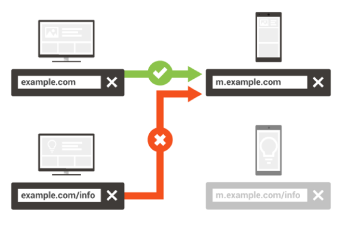
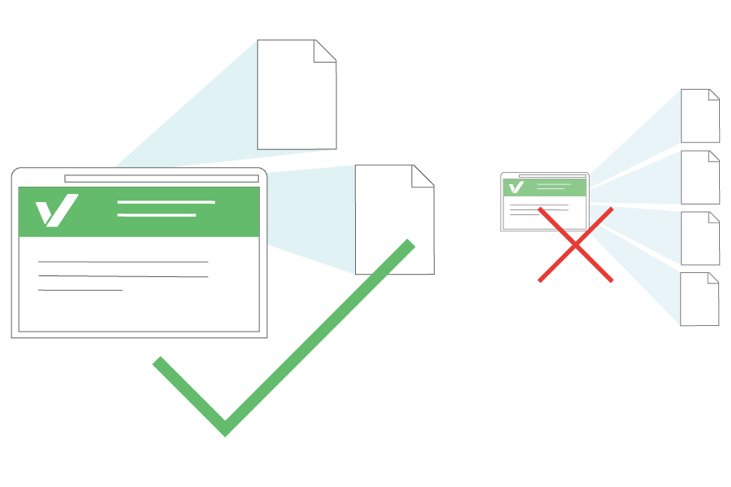
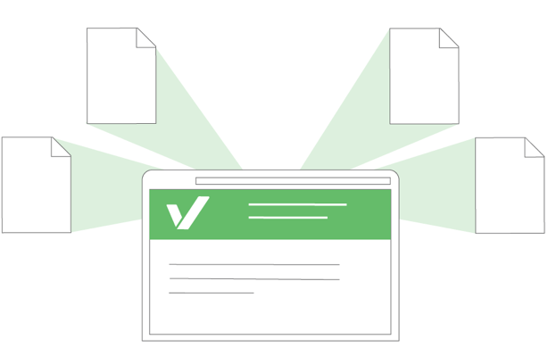
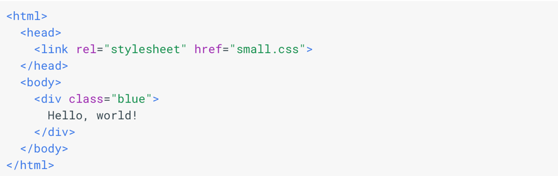
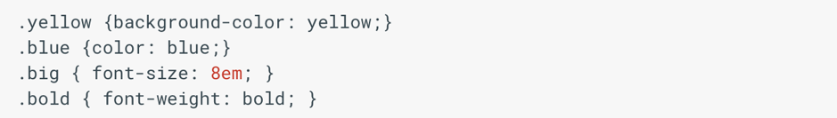
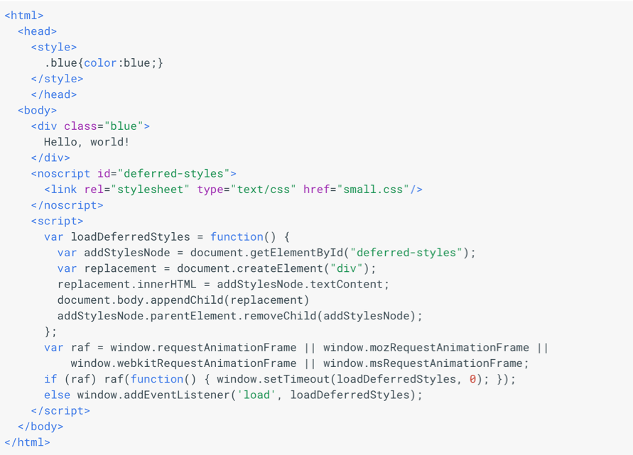
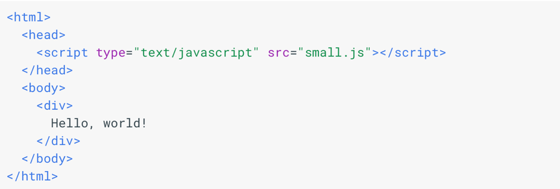
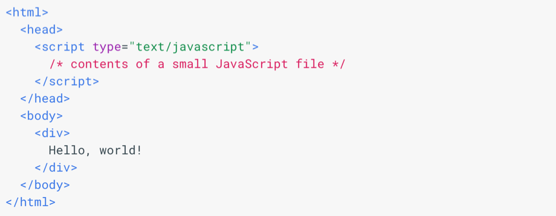

Въведение
Нека само си зададем въпроса щеше ли да видим чудото, наречено Интернет, във вида, в който го познаваме днес, без наличието на бързината на уеб страниците. А нека дори за миг си представим съвременния свят, в който Интернет е просто средство за изпращане на документи между големи организации, а не част от нашето ежедневие. Да, обществото ни със сигурност се промени след популяризирането на Интернет. В технологичен аспект основен е приносът на скоростта на зареждане на уеб страниците и предимството човек да проверява/търси много по-бързо информация, отколкото да търси тази информация в книга в голяма библиотека, например. В днешния свят човечеството е свикнало със забързания и динамичен живот. Хората искат да могат да намерят отговори на своите въпроси възможно най-бързо. Проучванията показват, че хората наистина се интересуват от скоростта на Интернет страниците и най- вече на най-използваната от човеците уеб страница - Google. Скоростта на страницата е един от най-важните фактори за бързото мобилно търсене.
Новости
„Speed update“ засяга само Google страници, които предоставят най-бавния достъп нa потребителите и засяга само малък процент от заявките. Той прилага същия стандарт към всички страници, независимо от технологията, използвана за изграждането
на дадена страница. Заявката за търсене все още е много силен сигнал, така че бавната страница все още да може да се нарежда на високо ниво, ако има голямо и подходящо съдържание.
„Speed update“ насърчава разработчиците да мислят широко за това как ефективността се отразява на потребителското изживяване и да обмислят различни показатели за потребителския опит. Въпреки че няма инструмент, който директно
показва дали дадена страница е засегната от този нов фактор за класиране, ето някои ресурси, които могат да се използват за оценка на ефективността на дадена страница:
• Отчет за потребителския опит - публичен набор
от ключови показатели за потребителския опит за популярни дестинации в мрежата, каквито имат потребителите в реални условия;
• Lighthouse - автоматизиран инструмент и част от инструментите за програмисти за одит на
качеството (ефективност, достъпност и други) на уеб страници;
• PageSpeed Web Performance Insights - инструмент, който показва колко добре се изпълнява дадена страница и предлага оптимизации на производителността; PageSpeed
Insights (PSI) отчита ефективността на дадена страница както за мобилни устройства, така и за настолни устройства и дава предложения за това как тази страница може да бъде подобрена. PSI предоставя както лабораторни, така и полеви
данни за дадена страница. Лабораторните данни са полезни за отстраняване на проблеми с производителността, тъй като се събират в контролирана среда. Въпреки това, тя може да не обхваща реални проблеми. Данните за полето са полезни
за улавяне на истинския потребителски опит в реалния свят, но имат по-ограничен набор от показатели.
Ще разгледаме няколко характеристики на PSI:
• Оценка на изпълнението
В горната част на отчета PSI предоставя резултат, който обобщава ефективността на страницата. Този резултат се определя от стартирането на Lighthouse за събиране и анализ на лабораторни
данни за страницата. Резултат от 90 или повече се счита за бърз, а 50 до 90 се счита за среден. Под 50 се счита за бавен.
• Реални данни
Когато на PSI е даден URL адрес, той ще го потърси в набора от данни за потребителския опит. Ако има такъв, PSI съобщава данните за първото съдържание, съдържащо Paint (FCP), и данните от метриката
за първото въвеждане на закъснение (FID).
• Класифициране
PSI също класифицира полевите данни в 3 раздела - бърз, среден или бавен.
Най-общо казано, бързите страници са приблизително в най-горните 10%, средните страници са в следващите 40%, а бавните
страници са в дъното на 50%. Цифрите са закръглени за четливост. Тези прагове се прилагат както за мобилни устройства, така и за настолни компютри и са определени въз основа на човешките възприятия. PSI представя разпределение
на тези показатели, така че разработчиците да могат да разберат обхвата на FCP и FID стойностите за тази страница или произход. Това разпределение се разделя на три категории: бързо, средно и бавно, обозначени със зелени, оранжеви
и червени ленти.
Например, 14% от оранжевата лента на FCP показва, че 14% от всички наблюдавани стойности на FCP падат между 1000 и 2,500ms. Тези данни представляват обобщен изглед на всички натоварвания на страниците през последните 30 дни.
• Лабораторни данни
PSI използва Lighthouse, за да анализира дадения URL адрес, генерирайки оценка на ефективността, която оценява производителността на страницата на различни показатели. Всеки показател се
оценява и обозначава с икона:
- Бързото се показва със зелена отметка;
- Средната стойност се обозначава с оранжев кръг;
- Бавното се показва с червен предупредителен триъгълник;
• Одити
Lighthouse разделя одити на три секции:
- Opportunities - предоставят предложения за подобряване на показателите за ефективността на страницата. Всяко предложение в този раздел изчислява колко по-бързо
ще се зареди страницата, ако подобрението е приложено;
- Diagnostics - предоставя допълнителна информация за това как дадена страница спазва най-добрите практики за уеб разработка;
- Passed audits - показва одитите, които
са преминали през страницата.
Добри практики
• Избягване пренасочването на целевите страници. Това правило се задейства, когато PageSpeed Insights открие, че имате повече от едно пренасочване от дадения URL адрес към крайната целева страница. Пренасочванията задействат допълнителен
цикъл HTTP заявка-отговор и забавяне на визуализацията на страницата. В най-добрия случай, всяко пренасочване ще добави едно кръстовище (HTTP заявка-отговор) и в най-лошия случай може да доведе до множество допълнителни кръгове
за извършване на DNS търсене, договаряне на TCP/TLS в допълнение към допълнителния HTTP заявка цикъл на отговор. В резултат на това трябва да намалите до минимум използването на пренасочвания, за да подобрите ефективността на сайта.
Ето няколко примера за модели за пренасочване:
• example.com използва отзивчив уеб дизайн, не е необходимо пренасочване – това е бързо и оптимално.
• example.com → m.example.com/home - наказание за няколко кръга за мобилни потребители.
• example.com → www.example.com → m.example.com - много бавно мобилно изживяване за потребителите.

Научете основите на отзивчивия уеб дизайн, за да осигурите многофункционално изживяване и да премахнете ненужните пренасочвания за потребителите.
• Разрешаване на компресия
Tова правило се задейства, когато PageSpeed Insights открие, че подлежащите на компресиране ресурси са доставени без компресиране.
Всички модерни браузъри поддържат и автоматично договарят gzip компресия за всички HTTP заявки. Разрешаването на gzip компресията може да намали размера на прехвърления отговор с до 90%, което може значително да намали времето
за изтегляне на ресурса, да намали използването на данни за клиента и да подобри времето за първото визуализиране на страниците ви.
Активирайте и тествайте поддръжката на gzip компресия на уеб сървъра. Проектът HTML5 Boilerplate съдържа примерни конфигурационни файлове за всички най-популярни сървъри с подробни коментари за всеки флаг и настройка на конфигурацията.
Намерете любимия си сървър в списъка, потърсете секцията gzip и потвърдете, че сървърът ви е конфигуриран с препоръчани настройки. Алтернативно, консултирайте се с документацията за уеб сървъра за това как да активирате компресията:
- Apache: Използвайте mod_deflate;
- Nginx: Използвайте ngx_http_gzip_module;
- IIS: Конфигуриране на HTTP компресиране;
PageSpeed Insights съобщава, че много от статичните файлове със съдържание трябва да бъдат gzip, но съм конфигурирал уеб сървъра да обслужва тези файлове с помощта на gzip компресия. Защо PageSpeed Insights не разпознава компресията?
Прокси сървърите и антивирусният софтуер могат да деактивират компресията, когато файловете се изтеглят на клиентска машина. Резултатите от PageSpeed Insights са базирани на заглавия, които всъщност са били върнати на клиента
ви, така че ако използвате анализ на клиентска машина, която използва такъв антивирусен софтуер, или който стои зад междинен прокси сървър (много прокси сървъри са прозрачни, и може дори да не сте наясно с посредник, който се намесва
между вашия клиент и уеб сървър), тоест те може да са причината за този проблем.
• Подобряване на времето за отговор на сървъра
Това правило се задейства, когато PageSpeed Insights открие, че времето за отговор на сървъра е над 200ms.

Времето за отговор на сървъра измерва колко време е необходимо, за да заредите необходимия HTML код, за да започнете да визуализирате страницата от сървъра, като изваждате латентността на мрежата между Google и вашия сървър.
Възможно е да има вариация от един цикъл към следващия, но разликите не трябва да са твърде големи. В действителност, силно променливото време за реакция на сървъра може да означава, че има проблем с производителността.
Трябва да намалите времето за отговор на сървъра под 200ms. Има десетки потенциални фактори, които могат да забавят реакцията на вашия сървър, например: бавна логика на приложението, бавни заявки за база данни, бавно маршрутизиране,
рамки, библиотеки, гладуване на ресурсния процесор или глад на паметта. Трябва да вземете предвид всички тези фактори, за да подобрите времето за отговор на сървъра. Първата стъпка към разкриването на това защо времето за отговор
на сървъра е високо, е това да се измери. След това, с наличните данни, трябва да се консултирате се с подходящите ръководства за това как да се справите с проблема. След като разрешите проблемите, трябва да продължите да измервате
времето за отговор на сървъра си и да адресирате бъдещите затруднения при изпълнението. Съберете и проверете съществуващите резултати и данни. Ако няма налични такива, оценете с помощта на автоматизирано решение за мониторинг на
уеб приложения (налични са хоствани версии и версии с отворен код за повечето платформи) или добавете персонализирани инструменти. Идентифицирайте и поправете най-тесните места в изпълнението. Ако използвате популярна уеб рамка
или платформа за управление на съдържанието, консултирайте се с документацията за най-добри практики за оптимизация на работата. Наблюдавайте и предупреждавайте за бъдещи регресии на производителността!
• Кеширане на браузъра
Това правило се задейства, когато PageSpeed Insights открие, че отговорът от сървъра не включва кеширащи заглавия или ако ресурсите са указани да бъдат кеширани само за кратко време.

Извличането на ресурси по мрежата е едновременно бавно и скъпо: изтеглянето може да изисква множество кръгли пътувания между клиента и сървъра, което забавя обработката и може да блокира визуализацията на съдържанието на страницата,
както и разходите за данни за посетителя. Всички отговори на сървъра следва да определят политика на кеширане, за да помогнат на клиента да определи дали и кога може да използва повторно извлечен по-рано отговор.
Всеки ресурс трябва да определи ясна политика за кеширане, която отговаря на следните въпроси: дали ресурсът може да бъде кеширан, от кого може да бъде кеширан, за колко време, и ако е приложимо, как може да бъде ефективно
презаверен при изтичане на политиката за кеширане. Когато сървърът върне отговор, той трябва да предостави Cache-Control и ETag заглавия:
- Cache-Control - определя как и колко дълго индивидуалният отговор може да бъде кеширан от браузъра и други междинни кешове.
- ETag - предоставя знак за потвърждаване, който автоматично се изпраща от браузъра, за да провери
дали ресурсът е променен от последния път, когато е бил поискан.
За да определите оптималната кеш политика за вашия сайт, моля използвайте следните ръководства:
- Дефиниране на оптимална политика за контрол на кеша;
- Анулиране и актуализиране на кешираните отговори;
- Контролен списък за кеширане.
Препоръчваме минимално време за съхранение на кеш от една седмица и за предпочитане до една година за статични активи или активи, които се променят рядко. Ако се нуждаете от прецизен контрол върху това, кога ресурсите се анулират,
препоръчваме да използвате техника за отпечатъци по URL адрес или техника за модифициране на версиите.
• Минимизиране на ресурсите;
Това правило се задейства, когато PageSpeed Insights открие, че размерът на един от ресурсите ви може да бъде намален чрез понижаване.
Минимизирането се отнася до процеса на премахване на ненужни или излишни данни, без да се засяга начина, по който ресурсът се обработва от браузъра – например, кодиране на коментари и форматиране, премахване на неизползван
код, използване на по-кратки имена на променливи и функции и други.
Трябва да намалите ресурсите си в HTML, CSS и JavaScript:
- За да намалите HTML, опитайте с HTMLMinifier;
- За да намалите CSS, опитайте CSSNano и csso;
- За да намалите JavaScript, опитайте с UglifyJS. Компилаторът за затваряне – Closure compiler - също е много ефективен.
Можете да създадете процес на изграждане, който използва тези инструменти, за да минимизира и преименува файловете за разработка и да ги запази в производствена директория.
Алтернативно, PageSpeed модулът се интегрира с Apache или Nginx уеб сървър за автоматично оптимизиране на вашия сайт, включително за намаляване на ресурсите.
• Оптимизиране на изображенията
Tова правило се задейства, когато PageSpeed Insights открие, че изображенията на страницата могат да бъдат оптимизирани, за да намалят размера на файловете, без съществено да повлияят на визуалното им качество.
Изображенията често отчитат повечето от изтеглените байтове на страницата. В резултат на това, оптимизирането на изображенията често може да доведе до някои от най-големите спестявания и подобрения в байта: колкото по-малко
байтове трябва да изтегли браузърът, толкова по-малко конкуренция има за пропускателната способност на клиента и по-бързо браузърът може да изтегля и предава съдържанието на екрана.
Намирането на оптимален формат и стратегия за оптимизация на вашите имидж активи изисква внимателен анализ в много измерения: тип кодирани данни, възможности за формат на изображението, настройки за качество, резолюция и други.
Освен това трябва да обмислите дали някои изображения се обслужват най-добре във векторния формат, ако желаните ефекти могат да бъдат постигнати чрез CSS и как да се доставят подходящо мащабирани активи за всеки тип устройство.
Следвайте най-добрите практики за обслужване на отзивчиви изображения Следвайте контролния списък за оптимизация на изображения за отделни изображения. Оптимизации за изображения в GIF, PNG и JPEG Форматите GIF, PNG и JPEG
осигуряват 96% от целия трафик на изображението в Интернет. Поради популярността си PageSpeed Insights предоставя конкретни препоръки за оптимизиране. GIF и PNG са без загуби, тъй като процесът на компресиране не прави никакви
визуални модификации на изображенията. За неподвижни изображения, PNG постига по-добро съотношение на компресия с по-добро визуално качество. За анимирани изображения, помислете за използването на видео елемент вместо GIF, за да
постигнете по-добра компресия.
- Винаги конвертирайте GIF в PNG, освен ако оригиналът е анимиран или малък (по-малко от няколко стотин байта).
- За GIF и PNG премахнете алфа канала, ако всички пиксели са непрозрачни.
Например, можете да използвате конвертиране на двоични файлове, за да оптимизирате вашите GIF и PNG изображения със следната команда (параметрите в скобите са незадължителни): JPEG е формат за загуба. Процесът на компресиране
премахва визуалните детайли на изображението, но степента на компресия може да бъде 10 пъти по-голяма от GIF или PNG. Намалете качеството до 85, ако е по-високо. При качество по-голямо от 85, изображението става по-бързо, докато
визуалното подобрение е малко. Използвайте цветово пространство в сиво, ако изображението е черно-бяло. Например, можете да използвате конвертирания двоичен файл, за да оптимизирате вашите JPEG изображения със следната команда
(параметрите в скобите са незадължителни):

JPEG е формат за загуба. Процесът на компресиране премахва визуалните детайли на изображението, но степента на компресия може да бъде 10 пъти по-голяма от GIF или PNG. Намалете качеството до 85, ако е по-високо. При качество
по-голямо от 85, изображението става по-бързо, докато визуалното подобрение е малко. Използвайте цветово пространство в сиво, ако изображението е черно-бяло. Например, можете да използвате конвертирания двоичен файл, за да оптимизирате
вашите JPEG изображения със следната команда (параметрите в скобите са незадължителни):

• Оптимизиране на доставката на CSS
Това правило се задейства, когато PageSpeed Insights открие, че страницата включва рендериране на блокиращите външни стилове, които забавят времето за първо рендиране.
Преди браузърът да може да визуализира съдържанието, той трябва да обработи цялата информация за стила и оформлението на текущата страница. В резултат на това браузърът ще блокира визуализацията, докато външните таблици за
стилове бъдат изтеглени и обработени, което може да изисква многократни прекъсвания и забавяне на времето за първо рендиране. Вижте построяването, оформлението и рисуването на дървото за визуализация, за да научите повече за критичния
път на визуализация, и направете блокиране на CSS за съвети как да деблокирате визуализацията и да подобрите показването на CSS.
Ако външните CSS ресурси са малки, можете да ги вмъкнете директно в HTML документа, който се нарича inlining. Поставянето на малки CSS по този начин позволява на браузъра да продължи с визуализирането на страницата. Имайте
предвид, че CSS файлът е голям, напълно вмъкване на CSS може да доведе до PageSpeed прозрения за предупреждение, че горната част на страницата ви е твърде голяма чрез Приоритет видимо съдържание. В случай на голям CSS файл, ще
трябва да идентифицирате и вмъкнете CSS, необходим за визуализиране на съдържанието по-горе, и да отложи зареждането на останалите стилове, докато не се появи съдържанието по-горе.
Ако HTML документът изглежда така:

А ресурсът small.css е такъв:

След това можете да вградите критичния CSS, както следва:

Критичните стилове, необходими за оформяне на съдържанието по-горе, са вмъкнати и приложени към документа. Пълният small.css се зарежда след първоначалната картина на страницата. Нейните стилове се прилагат към страницата,
след като завърши зареждането, без да блокира първоначалното рендиране на критичното съдържание.
• Приоритизиране на видимото съдържание
Това правило се задейства, когато PageSpeed Insights открие, че се изискват допълнителни мрежови пътувания, за да се покаже съдържанието по-горе на страницата.
Ако изискваното количество данни надвишава първоначалния прозорец за претоварване (обикновено компресиран на 14.6kB), ще са необходими допълнителни пътувания между сървъра и браузъра на потребителя. За потребители в мрежи
с висока латентност, като мобилни мрежи, това може да доведе до значителни закъснения при зареждането на страницата.
За да направите страниците по-бързи, ограничете размера на данните (HTML маркиране, изображения, CSS, JavaScript), които са необходими, за да направите съдържанието на страницата по-горе. Има няколко начина да направите това:
- Структурирайте HTML кода си, за да заредите първо критичното съдържание по-горе;
- Намалете количеството данни, използвани от вашите ресурси;
- Структурирайте HTML кода си, за да заредите първо критичното съдържание
по-горе;
Първо заредете основното съдържание на страницата си. Структурирайте страницата си, така че първоначалният отговор от сървъра ви изпраща данните, необходими за незабавно визуализиране на критичната част от страницата и за
отлагане на останалите. Това може да означава, че трябва да разделите вашата CSS на две части: част, която е отговорна за оформянето на ATF частта от съдържанието, и частта, която може да бъде отложена.
Обмислете следните примери за това как даден сайт може да бъде преструктуриран, за да се зарежда по-бързо:
Ако HTML зарежда виджети на трети страни, преди да зареди основното съдържание, първо променете реда за зареждане на основното съдържание. Ако сайтът ви използва дизайн с две колони с странична лента за навигация и статия,
но HTML се зарежда в страничната лента преди статията, помислете първо за това. Намалете количеството данни, използвани от вашите ресурси. След като сайтът ви е бил преработен, за да работи добре на няколко устройства и първо да
зареди критичното съдържание, използвайте следните техники, за да намалите количеството данни, необходими за визуализирането на страницата ви:
- Минимизиране на ресурсите: HTML, CSS и JavaScript могат да бъдат премахнати чрез премахване на ненужното празно пространство и коментари. Допълнителни оптимизации могат да бъдат възможни чрез използването на инструменти,
които преименуват имена на променливи във вашите ресурси.
- Помислете да използвате CSS вместо изображения, където е възможно.
- Активиране на компресирането
• Премахване на блокирането на JavaScript.
Това правило задейства, когато PageSpeed Insights открие, че HTML препраща към блокиращ външен JavaScript файл в горната част на страницата.
Преди браузърът да може да визуализира страница, тя трябва да изгради DOM дървото, като анализира HTML маркировката. По време на този процес, когато анализаторът срещне скрипт, той трябва да спре и да го изпълни, преди да
може да продължи да анализира HTML. В случай на външен скрипт, анализаторът също е принуден да изчака за изтегляне на ресурса, който може да доведе до едно или повече кръстосани мрежи и да забави времето до първото визуализиране
на страницата. Вижте Добавяне на интерактивност с JavaScript, за да научите повече за това как JavaScript влияе на критичния път на визуализация.
Трябва да избягвате и минимизирате използването на блокиране на JavaScript, особено на външни скриптове, които трябва да бъдат извлечени, преди да могат да бъдат изпълнени. Скриптове, които са необходими за пренасочване на
съдържанието на страницата, могат да бъдат включени, за да се избегнат допълнителни мрежови заявки, но подчертаното съдържание трябва да бъде малко и трябва да се изпълнява бързо, за да осигури добра производителност. Скриптовете,
които не са от критично значение за първоначалното рендиране, трябва да бъдат направени асинхронни или отложени до първата рендър. Моля, имайте предвид, че за да подобрите времето за зареждане, трябва да оптимизирате и доставката
на CSS.
Външните блокиращи скриптове принуждават браузъра да чака извличането на JavaScript, което може да добави един или повече мрежови кръгове, преди страницата да може да бъде визуализирана. Ако външните скриптове са малки, можете
да вмъкнете съдържанието им директно в HTML документа и да избегнете латентността на мрежовите заявки. Например, ако HTML документът изглежда така:

А ресурсът small.js е такъв:
След това можете да вмъкнете скрипта, както следва:

По подразбиране JavaScript блокира DOM конструкцията и по този начин забавя времето за първо рендиране. За да предотвратите блокирането на JavaScript от JavaScript, препоръчваме да използвате атрибута async на HTML за външни
скриптове.
Имайте предвид, че асинхронните скриптове не могат да се изпълняват в определен ред и не трябва да използват document.write. Скриптовете, които зависят от поръчката за изпълнение или нуждата от достъп или промяна на DOM или
CSSOM на страницата, може да се наложи да бъдат пренаписани, за да се отчетат тези ограничения.
Зареждането и изпълнението на скриптове, които не са необходими за първоначалното рендериране на страница, може да бъде отложено, докато след първоначалното рендиране или други критични части на страницата не се завърши зареждането.
Това може да спомогне за намаляване на конкуренцията в ресурсите и подобряване на производителността.
Заключение
В настоящия реферат засегнахме множество добри практики за Web Performance на Google - Избягване пренасочването на целевите страници, Разрешаване на компресия, Подобряване на времето за отговор на сървъра, кеширане на браузъра, минимизиране на ресурсите, Оптимизиране на изображенията, Оптимизиране на доставката на CSS, Приоритизиране на видимото съдържание, Премахване на блокирането на JavaScript. Като примери бяха включени няколко програмни фрагмента, някои от които далеч не са толкова прости.